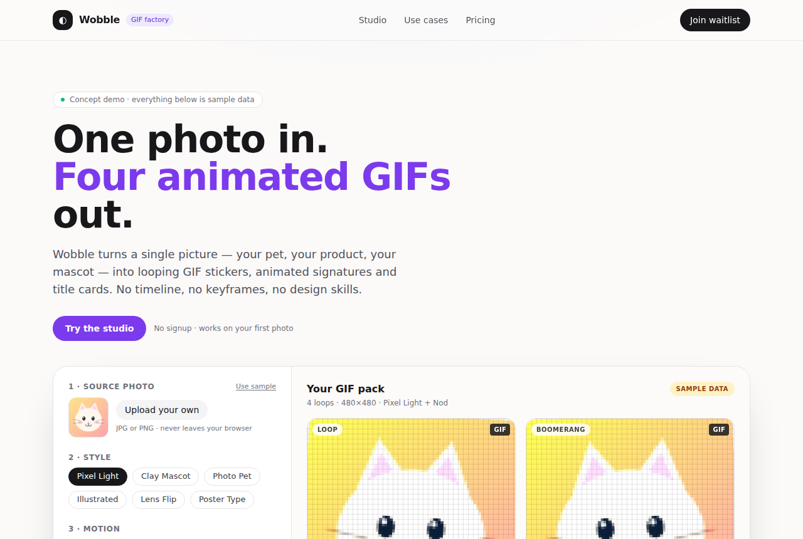

gif-factory: Turn photos into styled animated GIFs with Codex
WoYun520/gif-factory · Media & creativeMIT⭐ 1,602

What it is: WoYun520/gif-factory is a collection of Codex Skills (prompts plus scripts) that turns a still image or a short text brief into animated GIFs. It covers sticker packs, lenticular flip cards, animated posters, dynamic signatures, cinematic title lettering, compact storybooks, and short brand films. You install the top-level Skill, describe what you want, and the agent picks the right style recipe and runs the scripts.
Why it's taking off: The repo is visual and easy to demo — pixel stickers, pet animations, clay mascots, ink-assembly signatures. Each style ships with a STYLE.md recipe and a gallery of examples, so output is repeatable instead of a one-off prompt. It hit ~1.6k stars in a short window, per the repo's growth, which tracks with how much demand there is from indie creators and small shops for cheap, on-brand motion assets.
Where the product opportunity is: The Skill is the recipe; the product is the hosted button. Wrap photo upload, style picker, and one-click export into a web tool priced per render or by subscription. The style catalog is the real differentiator — ship a licensed, English-first style library (stickers, Twitch emotes, Etsy listing GIFs, short brand bumpers) and keep the agent complexity out of the user's way. Note that the README is Chinese and examples lean toward Chinese text and fonts, so localization is part of the MVP, not an afterthought. Per the README, some character IP and fonts are not covered by the MIT license, so a commercial product needs its own cleared assets.
Today's top 5
| # | Repo | Buzz | Startup | Overall |
|---|---|---|---|---|
| 1 | WoYun520/gif-factory | 8.33 | 7.1 | 7.46 |
| 2 | l0ng-ai/openidea | 7.33 | 6.9 | 7.12 |
| 3 | expo/exact | 7.0 | 7.15 | 6.86 |
| 4 | openai/codex-security | 8.0 | 5.7 | 6.8 |
| 5 | govijr/terminal-mac | 7.0 | 7.15 | 6.77 |